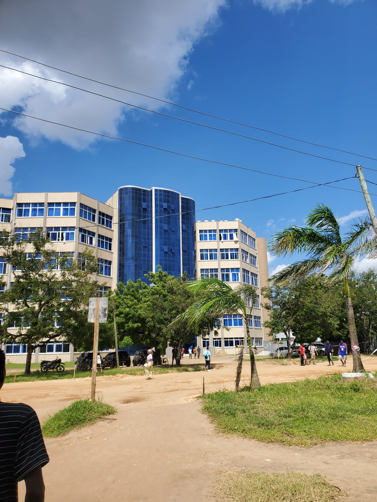
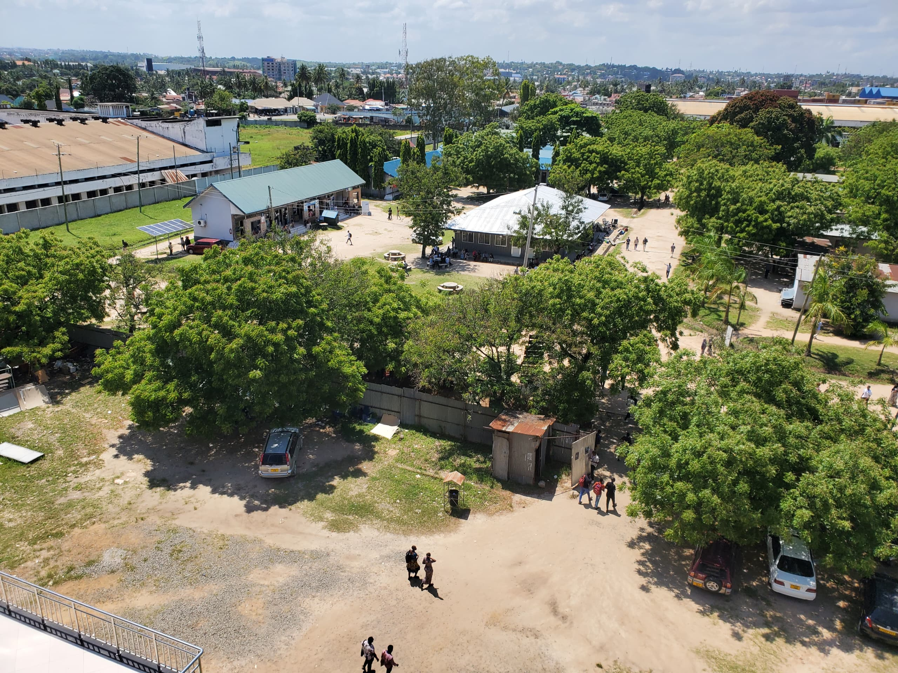
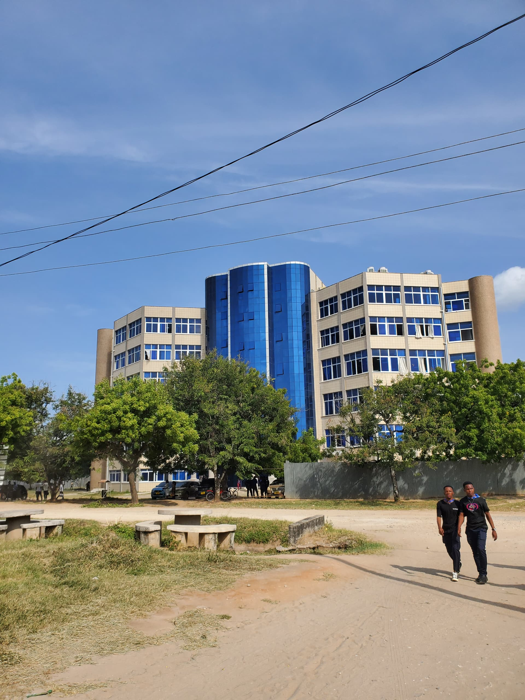
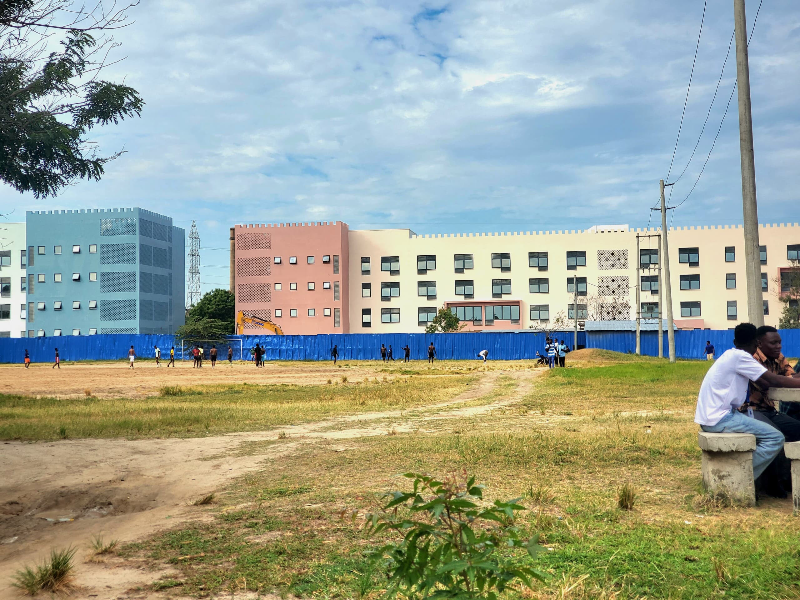
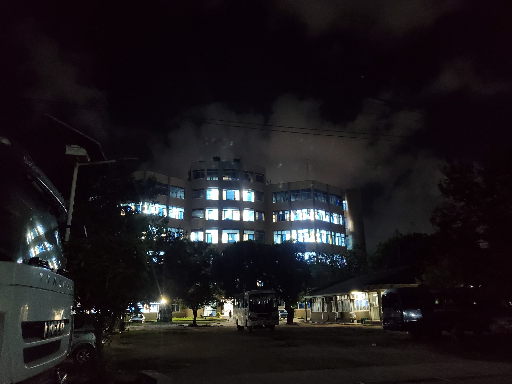
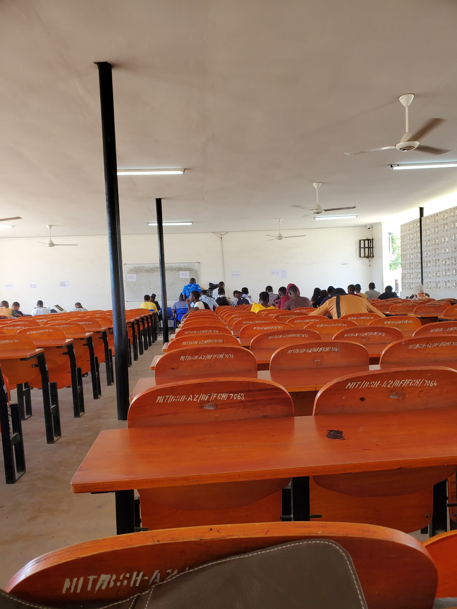
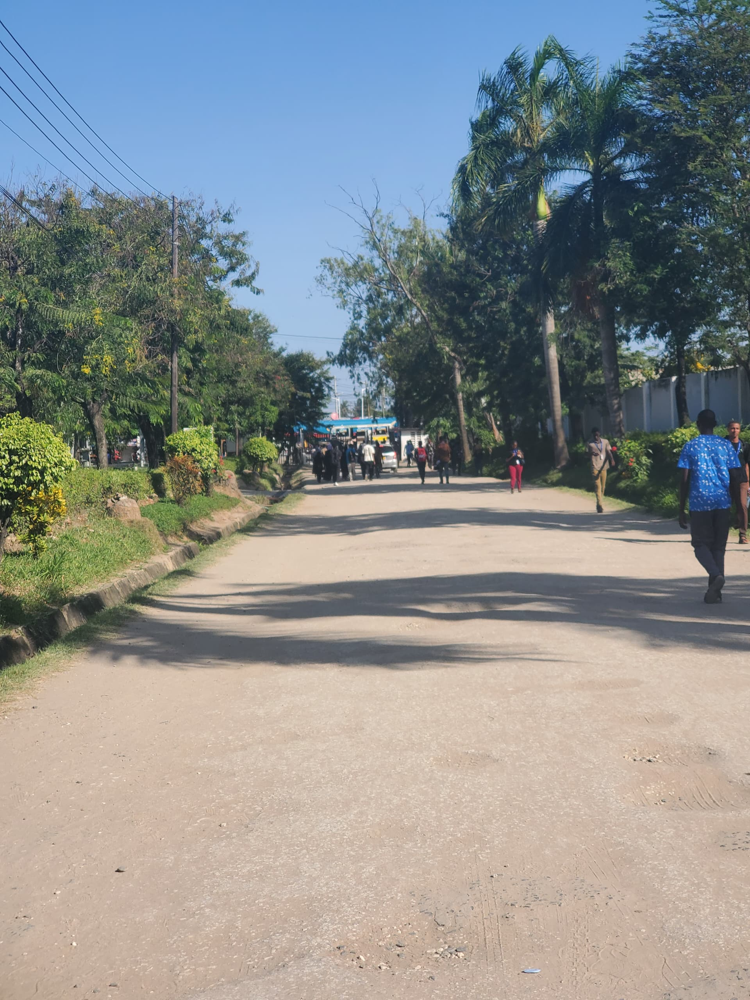

About Our Campus
The National Institute of Transport (NIT) is a public higher learning institution located on the west of Dar-es-Salaam region, along Mabibo road in Ubungo Light Industrial area; one kilometre of the Morogoro road. Te history of NIT dates back to 1975, when it was established as a training wing of the then National Transport Corporation (NTC). NIT was charged with the responsibility of strengthening human resource capabilities of transport operatives and middle level managers of subsidiary companies of NTC. Tese subsidiary companies were: Kampuni ya Mabasi Tanzania (KAMATA), Usafri Dar-es-Salaam Limited (UDA) and Regional Transport Companies (RETCOs).
In 1982, it was realized that there was a need to have an Institute that would cover all modes of transport (air, railway, road, marine and pipeline) through expansion of its area of activities and responsibilities. As a result, NIT was re- established through Act of Parliament Number 24 of 1982 (Chapter 187 revised edition 2009) as an autonomous Higher Learning Institution under the Ministry of Communications and Works. It started operating on 1st July, 1983 through the Government Notice No. 91. Currently, NIT is under the Ministry of Works and Transport (Transport sector). NIT is mandated by the Government of the United Republic of Tanzania to ofer Training conduct Research and Consultancy in all modes of Transport.
The Institute has Certifcate, Ordinary Diploma, Bachelors’Degree, Postgraduate Diploma and Masters Degree in the areas of Logistics and Transport Management, Maritime Transport and Petroleum Technology, Aviation Road and Railway Transport and Allied Management Sciences.
1.3 Vision
To be a World-Class Training Institution Committed to Support a Sustainable Transport Sector
1.4 Mission
To Provide High-Quality Education and Training, Research, Consultancy, Innovation and Services in Transport and Allied Fields for Sustainable Socio- Economic Development.
A short video showing different parts of NIT environment
      
comments